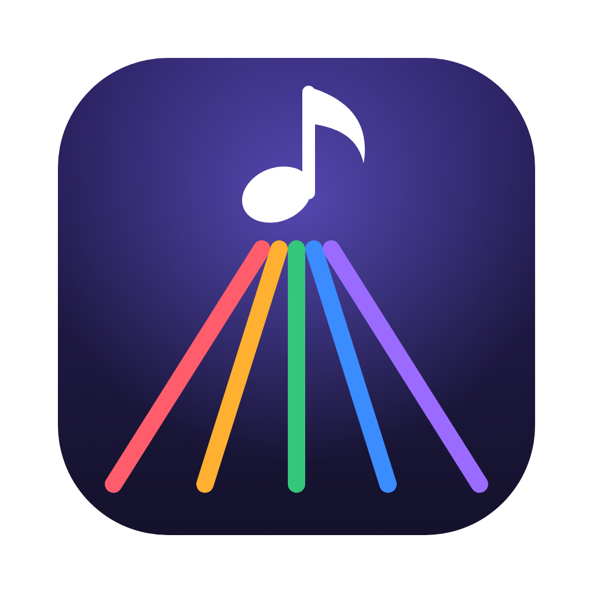

악보 파일 이름의 코드를 읽어서 A부터 G까지 일곱 ROAD로 나누고, 바로 크게 봐요
MSROAD-Windows.zip을 오른쪽 클릭 → 모두 압축 풀기. 나온 MSROAD 폴더를 문서 같은 편한 곳에 두고 MSROAD.exe를 두 번 눌러요.
파란 “Windows의 PC 보호” 창이 뜨면 추가 정보 → 실행. 처음 한 번만 물어봐요.
악보 폴더 고르기를 누르면 앱 안에 폴더 목록이 떠요. 바탕 화면 · 문서 · 드라이브에서 찾아 들어가 이 폴더의 악보 보기. 하위 폴더까지 함께 읽어요.
앱을 켜면 마지막에 본 폴더가 그대로 열려요. 위쪽 📁 폴더 이름을 누르면 바꿀 수 있어요.
A4 · A3, 세로 · 가로, 한 페이지에 1곡 · 2곡 · 3곡 나란히, 4곡(2×2) 또는 자유 배치. A3 가로에 2곡이면 곡마다 A4 크기 그대로예요.
왼쪽 목록에서 끌어서 칸에 놓거나 두 번 눌러요. 여러 장 악보는 다음 칸에 이어서 들어가고, 칸끼리 끌어 자리를 바꿔요.
자르기(빈 여백 자동) · 확대 · 축소는 칸 안에서, 가로 · 세로 따로도 돼요(가장자리 끌기). 다른 키로 바꾸기 · Ctrl+Z로 되돌리기.
미리보기로 확인하고 인쇄(Ctrl+P) — PDF 창이 열리면 그 창에서 한 번 더 Ctrl+P — 또는 PDF로 저장. 배치는 세트로 자동 저장돼 다음에 다시 열어요.